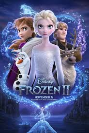

El rey Agnarr de Arendelle cuenta una historia a sus hijas pequeñas, Elsa y Anna, que su abuelo, el rey Runeard, había establecido un tratado con una tribu vecina de Northuldra al construir una presa en su tierra natal, el Bosque Encantado. Sin embargo, se produce una pelea, que resulta en la muerte de Runeard y enfurece a los espíritus elementales de la Tierra, Fuego, Agua y Aire del bosque. Los espíritus desaparecen y un muro de niebla atrapa a todos en el Bosque Encantado. El joven Agnarr apenas escapa debido a la ayuda de un salvador desconocido. Tres años después de su coronación, Elsa celebra el otoño en el reino con Anna, Olaf el muñeco de nieve, Kristoff la cosechadora de hielo y el reno de Kristoff, Sven. Una noche, cuando Elsa oye una voz misteriosa que la llama, la sigue y sin querer despierta a los espíritus elementales, lo que obliga a todos en el reino a evacuar. Grand Pabbie y la colonia Rock Troll llegan y Pabbie informa que deben arreglar las cosas descubriendo la verdad sobre el pasado.
Elsa, Anna, Olaf, Kristoff y Sven se embarcan en el Bosque Encantado, siguiendo la misteriosa voz. Después de que la niebla se separa al toque de Elsa, el Air Spirit, en forma de tornado, aparece y barre a todos en su vórtice. Elsa lo detiene, formando un conjunto de esculturas de hielo. Las hermanas descubren que las esculturas son imágenes del pasado de su padre. Se encuentran con Northuldra y una tropa de soldados Arendellianos que todavía están en conflicto entre sí. Cuando aparece el Espíritu del Fuego, Elsa descubre que el espíritu es una salamandra mágica agitada, y lo calma. Elsa y Anna arreglan una tregua entre los soldados y los Northuldra después de descubrir que su madre, la Reina Iduna, era una Northuldra que había salvado a Agnarr, un Arendellian. Más tarde aprenden la existencia de un quinto espíritu que unirá a las personas con la magia de la naturaleza. Elsa, Anna y Olaf continúan hacia el norte, dejando atrás a Kristoff y Sven. Encuentran el barco destrozado de sus padres y un mapa con una ruta a Ahtohallan, un río mítico que su madre les dijo que contuviera todas las explicaciones del pasado. Elsa envía a Anna y Olaf a un lugar seguro y continúa sola. Ella encuentra y doma al Nøkk, el Espíritu del Agua que guarda el mar hasta Ahtohallan. Al llegar a Ahtohallan, un glaciar, Elsa descubre que la voz que la llamaba era el recuerdo de la llamada del joven Iduna; que sus poderes eran un regalo de la naturaleza debido al acto desinteresado de Iduna de salvar a Agnarr y que Elsa es el quinto espíritu.
Luego, Elsa se entera de que la presa fue construida como una artimaña para reducir los recursos de Northuldra debido al disgusto del rey Runeard por la conexión de la tribu con la magia y su intención de incorporar la región a su reino. También se entera de que él fue quien inició el conflicto al matar al líder desarmado de Northuldra. Elsa envía esta información a Anna antes de congelarse debido a la aventura en la parte más peligrosa de Ahtohallan. Esto a su vez hace que Olaf se desvanezca.Anna recibe el mensaje de Elsa y concluye que la presa debe ser destruida para que se restablezca la paz. Anna encuentra y despierta los gigantescos Espíritus de la Tierra y los atrae hacia la presa. Los gigantes arrojan rocas dirigidas a Anna que destruyen la presa, enviando una inundación por el fiordo hacia el reino. Elsa se descongela y regresa a Arendelle, desviando la inundación y salvando el reino.A medida que la niebla desaparece, Elsa se reúne con Anna y revive a Olaf, y Anna acepta la propuesta de matrimonio de Kristoff. Elsa explica que ella y Anna son el puente entre las personas y los espíritus mágicos. Anna se convierte en la nueva Reina de Arendelle, mientras que Elsa se convierte en la protectora del Bosque Encantado que visita regularmente a Arendelle a medida que se restablece la paz. En una escena poscréditos, Olaf visita el palacio de hielo de Elsa y le cuenta los acontecimientos que experimentó a Marshmallow y los Snowgies.
